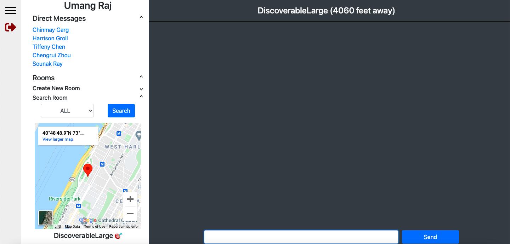
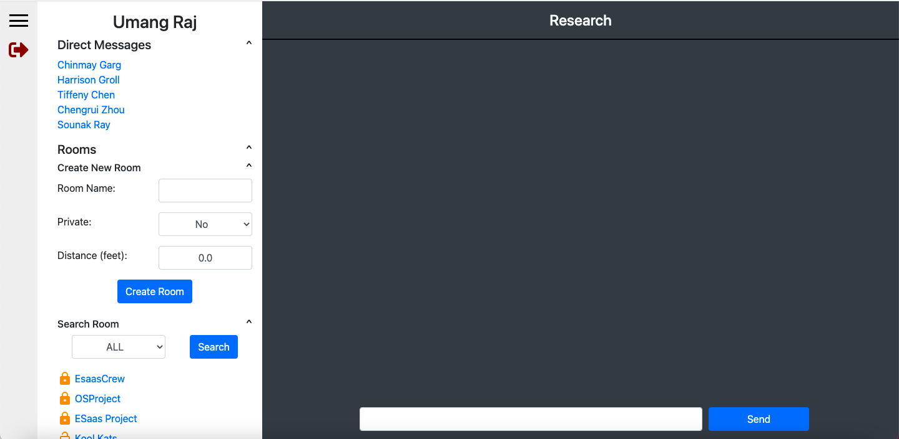
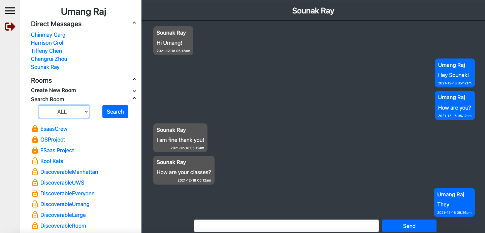

A simple web-based messaging application exclusively for Columbia affiliates that serves as a one-stop solution
for all communication needs. The application aims to eliminate the need of using multiple messaging apps
for exchanging information. The following screenshots have been taken from the live application that is hosted using Heroku:



The features implemented as a part of the app are:
- SignUp functionality for users to sign up using full name, username, email and password. The page also contains basic validation checks to ensure uniqueness of usernames, for LionMail authentication and for password matching.
- LionMail Verification: Every user who signs up using their Lionmail receives a verification link on their email address. An attempt to sign up using a non-Lionmail account will not be successful. Upon clicking on the verification link, an account is created for them on the ColumbiaChat platform.
- SignIn functionality for users to sign into the chat application using username and password.
- One to One Chat functionality from one user to another user shown under the ‘Direct Messages’ navbar.
- Create Public Groups (Discoverable to All): Create groups that are visible to all users who have signed up on the application.
- Create Public Groups (Discoverable within a Certain Radius): Create groups that are discoverable only by users who are currently signed in within the radius.
- Create Private Groups with only certain users: Create groups that only contain selected users being added as group members.
- Public Course Groups and filtering using Department Code: Course groups are available on the application that have been populated using the course data available from SSOL(Columbia's academic portal). These groups cannot be created manually by users.
The frontend has been designed HTML, CSS and Javascript. The backend has been implemented using Ruby on Rails. Unit and Integration tests have been written in RSpec whereas Cucumber has been used to test different user scenarios. Test coverage of 100% has been achieved on the application.
The project was undertaken as a part of the course 'Engineering Software as a Service' offered at Columbia University. The project was done in a team of 4 members comprising of Umang Raj, Chinmay Garg, Sounak Ray and Harrison Groll.
The GitHub repository of the project is Columbia Chat.